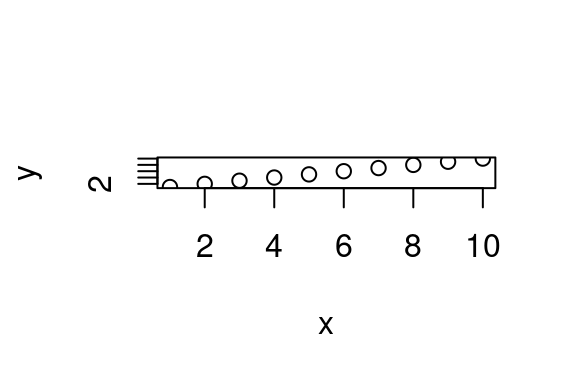

4 Day 5 - building workflows
Today we’re going to learn about applying these R skills to repeat, reproduce, extend, and share your analyses.
First, let’s review the last two days.
- What have we done?
- How do we do it many times?
- Crack open your code - can you use it again?
- Can you adapt it to modify your question, feed in new data, and modify the scientifically-important bits easily?
- Can you share it with someone and they follow along?
4.1 Using code many times - loops
You will want to do the same thing multiple times - automation is great. Let’s code up a simple little analysis - we’ll calculate the length (number of amino acids) in a viral structural protein sequence.
These files are in “data”.
viral_protein_data <-
read.delim("data/viral_structural_proteins/viral_proteins_001.tsv",
sep="\t",header=F)
viral_protein_data## V1 V2
## 1 YP_009507797.1 structural polyprotein Everglades virus
## V3
## 1 MFPFQPMYPMQPMPYRNPFAAPRRPWFPRTDPFLAMQVQELTRSMANLTFKQRRGAPPEGPPAKKSKREAPQKQRGGQRKKKKNEGKKKAKTGPPNLKTQNGNKKKTNKKPGKRQRMVMKLESDKTFPIMLEGKINGYACVVGGKLFRPMHVEGKIDNDVLAALKTKKASKYDLEYADVPQNMRADTFKYTHEKPQGYYSWHHGAVQYENGRFTVPRGVGARGDSGRPILDNQGRVVAIVLGGVNEGSRTALSVVMWNEKGVTVKYTPENCEQWSLVTTMCLLANVTFPCAQPPICYDRKPAETLAMLSANVDNPGYDELLKAAVTCPGRKRRSTEELFKEYKLTRPYMARCVRCAVGSCHSPIAIEAVKSDGHDGYVRLQTSSQYGLDPSGNLKSRTMRYNMYGTIEEIPLHQVSLHTSRPCHIVDGHGYFLLARCPAGDSITMEFKKDSVTHSCSVPYEVKFNPVGRELYTHPPEHGAEQACQVYAHDAQNRGAYVEMHLPGSEVDSSLVSLSSGLVSVTPPAGTSALVECECSGTTISKTINKTKQFSQCTKKEQCRAYRLQNDKWVYNSDKLPKAAGATLKGKLHVPFLLADGKCTVPLAPEPMITFGFRSVSLKLHPKYPTYLTTRELADEPHYTHELISEPSVRNFSVTAKGWEFVWGNHPPKRFWAQETAPGNPHGLPHEVIVHYYHRYPMSTITGLSICAAIVAVSIAASTWLLCRSRASCLTPYRLTPNAKMPLCLAVLCCARSARAETTWESLDHLWNNNQQMFWTQLLIPLAALIVVTRLLKCMCCVVPFLVVAGAAGAGAYEHATTMPNQAGISYNTIVNRAGYAPLPISITPTKIKLIPTVNLEYVTCHYKTGMDSPTIKCCGSQECTPTYRPDEQCKVFAGVYPFMWGGAYCFCDTENTQISKAYVMKSEDCLADHAAAYKAHTASVQALLNITVGEHSTVTTVYVNGETPVNFNGVKLTAGPLSTAWTPFDRKIVQYAGEIYNYDFPEYGAGQPGAFGDIQLRTVSSSDLYANTNLVLQRPKAGAIHVPYTQAPSGFEQWKKDKAPSLKFTAPFGCEIYTNPIRAENCAVGSIPLAFDIPDALFTRVSETPTLSAAECTLNECVYSSDFGGIATVKYSASKSGKCAVHVPSGTATLKEASVELAEQGSVTIHFSTANIHPEFRLQICTSFVTCKGDCHPPKDHIVTHPQYHAQTFTAAVSKTAWTWLTSLLGGSAVIIIIGLVLATLVAMYVLTNQKHNHow do we access the protein sequence? (V3)
How do we calculate the number of characters in this sequence?
Code it up!
4.1.1 Doing things multiple times
Let’s do this for all the proteins. The simplest way of doing this is to copy and paste it.
viral_protein_data <-
read.delim("data/viral_structural_proteins/viral_proteins_002.tsv",
sep="\t",header=F, as.is=T)
nchar(viral_protein_data$V3[[1]])## [1] 177viral_protein_data <-
read.delim("data/viral_structural_proteins/viral_proteins_003.tsv",
sep="\t",header=F, as.is=T)
nchar(viral_protein_data[1,"V3"])## [1] 137Go ahead and do this for all 242 proteins
… just kidding.
Try this to, well, list files:
## [1] "viral_proteins_000.tsv" "viral_proteins_001.tsv" "viral_proteins_002.tsv"
## [4] "viral_proteins_003.tsv" "viral_proteins_004.tsv"Note that I put a [1:5] to limit it to the first 5.
You could also use head().
Now how do you calculate the number of characters for each protein?
4.1.2 Loops
Loops are when you loop back to do something again.
The most common form of this is a for loop.
Other “control statements” or “flow control statements” are
while, repeat, and if.
Let’s look up what they do, with “?for”
Here’s an example loop:
## [1] 1
## [1] 2
## [1] 3
## [1] 4The pieces:
(i in 1:4)is what is being looped over -1:4is a vector of 1 through 4 that is created, and it is put one at a time intoi(a new variable). You need the parentheses.{and}denote the opening and closing brackets, specify the “code block” that is run each time.inside this “code block” is
print(i)- it prints the variablei, which is set to a value of 1, 2, 3, or 4 for each loop
video1
How do we loop through and print each file name?
What’s the analogous component?
## [1] "viral_proteins_000.tsv"
## [1] "viral_proteins_001.tsv"
## [1] "viral_proteins_002.tsv"
## [1] "viral_proteins_003.tsv"
## [1] "viral_proteins_004.tsv"How do we modify this to calculate the protein length?
for (i in list.files(path="data/viral_structural_proteins")[1:5] ) {
print(i)
print(nchar(read.delim(i)$V3[[1]]))
}## [1] "viral_proteins_000.tsv"## Warning in file(file, "rt"): cannot open file 'viral_proteins_000.tsv': No such
## file or directory## Error in file(file, "rt"): cannot open the connectionDebugging…
for (i in list.files(path="data/viral_structural_proteins",
full.names=T)[1:5] ) {
print(nchar(read.delim(i,sep="\t",header=F,as.is=T)$V3[[1]]))
}## [1] 1248
## [1] 1254
## [1] 177
## [1] 137
## [1] 1174.1.2.1 Storing values from a loop
How do we store this value?
In other languages, “append”. But R is not built that way. It’ll work, but it’s very inefficient. The “R-way” to store values from a loop is to define a vector of the right length, then put each element in it.
## [1] "" "" "" "" "" "" "" "" "" ""## [1] 0 0 0 0 0## [1] FALSE FALSEOkay, but how do we access each position to save the value? We need to turn out list of files into indicies. We’ll save it first so we can count how many there are.
seq_along is handy function, otherwise use something like
seq(1,length(x)).
first_five <- list.files(path="data/viral_structural_proteins")[1:5]
for (i in seq_along(first_five) ) {
print(first_five[i])
}## [1] "viral_proteins_000.tsv"
## [1] "viral_proteins_001.tsv"
## [1] "viral_proteins_002.tsv"
## [1] "viral_proteins_003.tsv"
## [1] "viral_proteins_004.tsv"Putting these together, we can save a vector of file names:
first_five <- list.files(path="data/viral_structural_proteins")[1:5]
filenamez <- vector("character",length(first_five))
for (i in seq_along(first_five) ) {
filenamez[i] <- first_five[i]
}
filenamez## [1] "viral_proteins_000.tsv" "viral_proteins_001.tsv" "viral_proteins_002.tsv"
## [4] "viral_proteins_003.tsv" "viral_proteins_004.tsv"And finally calculate the length of each protein:
first_five <- list.files(path="data/viral_structural_proteins",
full.names=T, pattern=".*tsv")[1:5]
lengthz <- vector("character",length(first_five))
for (i in seq_along(first_five) ) {
lengthz[i] <- nchar( read.delim(first_five[i],
header=F,as.is=T,sep="\t")$V3[[1]]
)
}
lengthz## [1] "1248" "1254" "177" "137" "117"Now we can take off the [1:5] limiter, and do the whole set:
first_five <- list.files(path="data/viral_structural_proteins",
full.names=T, pattern=".*tsv")
lengthz <- vector("character",length(first_five))
for (i in seq_along(first_five) ) {
lengthz[i] <- nchar( read.delim(first_five[i],
header=F,as.is=T,sep="\t")$V3[[1]]
)
}How do we go about visualizing/analyzing this?
## Error in hist.default(lengthz): 'x' must be numericer what…?
Numeric….
first_five <- list.files(path="data/viral_structural_proteins",
full.names=T, pattern=".*tsv")
lengthz <- vector("numeric",length(first_five))
for (i in seq_along(first_five) ) {
lengthz[i] <- nchar( read.delim(first_five[i],
header=F,as.is=T,sep="\t")$V3[[1]]
)
}
library(ggplot2)
ggplot( data.frame(length=lengthz) )+theme_classic()+
aes(x=length)+geom_histogram(bins=50)
## Min. 1st Qu. Median Mean 3rd Qu. Max.
## 1.0 231.5 646.0 729.2 1089.0 3390.04.1.2.2 Other control structures
video2
- while
- repeat
4.2 Writing (re)usable code
Crack open your code - can you use it again? Can you adapt it to modify your question, feed in new data, and modify the scientifically-important bits easily?
Let’s look at two chunks of code from a paper (lightly edited). The experiment is counting barcoded lineages of yeast cells to estimate “PPIs” (protein-protein interactions) 3 here’s an example of one style of writing R script:
# filter out bad barcode lineages ( <= 2 time points counts > 0, or maximum of each time point <= 5 or total counts of a lineage < 10)
bad_index = rep(0, nrow(DBC_known_counts))
for(i in 1:length(bad_index)){
counts = as.numeric(DBC_known_counts[i, 4:8])
if (length(which(counts != 0)) < 3 | max(counts) < 5 | sum(counts) < 10){
bad_index[i] = 1
}
}
length(which(bad_index == 1)) # 1447775- What is going on here?
- How do you feed in new data?
- How do you run this multiple times?
- How do you change the logic?
Here’s another example from the same author:
H202_Output <- PPI_calling_sigmoid(
PPI_multiple=dataFrameReader_T("/Volumes/zmliu_02/PPiseq_03/H2O2/counts/PPI_multiple_p.values.csv"),
specific_PPV=c(seq(0.5,0.58,by=0.02),seq(0.6,0.8,by=0.01),seq(0.82,0.9,by=0.02)),
Fitness=fitness(0,1,0.01),
p_value=seq(-4,0,0.1),
Neg_number_PPI=6e4,
Neg_ref_number=50,
p_threshold=-4
p_loc=6,
)Same questions.
4.2.1 Style guides can be inspiring
- tidyverse style guide
- google-specific changes
- Jean Fan’s
- search for “R style guide”
4.2.2 What style should you use?
Be inconsistently consistent! Balance for yourself:
- How easy is it to write?
- How easy is it for you to read?
- How easy is it for others to read?
- How similar is it to what everyone else is doing (a very good thing)?
But most importantly, use what folks around you are using. Be lazy, imitate others.
- How would you describe your code writing style?
- How do you name things?
- How good are your comments?
- What elements would you like to incorporate?
4.3 Writing modular code
What is modularity of code?
Why?
think more clearly than “hardcoding” stuff
change things more easily without forgetting everything
lets you operate at a higher level, by tweaking parameters in one place
4.3.1 Calculating standard error
Let’s calculate the standard error of a sample of values:
## Error in stderr(values): unused argument (values)Er … what? What is stderr doing?
?stderr
Write out the maths for the standard error of the mean
calcuate it
## [1] 0.4727122write a function that does it
what do we save it as?
test it
4.3.2 More complex modules
More examples/exercise
show a simulation of something…. genetic drift of a virus replicating?
lineage G1312F
exercise - wrap the entire analysis as a function
talk about ease of calling
gotcha about print() the plots
exercise - make a parameter and argument
ease of tweaking this
exercise - break into subfunctions, generate and plot
ease of changing models
Apply is a thing
Scholars will be familiar with that folks have strong opinions about using apply instead of for loops
Scholars will understand that getting the code done is the most important thing, but that good use of apply can be something to develop later to make code run faster, cleaner
Scholars will be able to read what an example of apply or s/lapply is doing, so that they can read examples online
Scholars will have heard the term “lambda function” ?
Scholars will understand that functions can be one-off (ie lambda, function(x){} ), and that’s okay
4.4 Packages are chunks of code (and sometimes data)
Let’s take a look at your code from the last few days. How would you share this with the other people in the course?
R, like other languages, is built on a package system - if you wrap up your code in particular expected ways and put it in particular expected places, it is very easy for others to get and use your code
side note link for interested students, easy of making pakcages (for advanced advanced)
4.4.1 first stop - CRAN
exercise - get the stringdist library, use it
exercise - get a new viz layer, use it
4.4.2 How does this package work?
?
??
etc
4.4.3 next stop - github
or remotes?
exercise - pull a package off github… ? maybe some sort of viz again?
Exercise - install a package from github and learn how to use it
problems with this - security, eh
4.4.4 finally - Bioconductor 😬
Scholars will know how to install Bioconductor package from CRAN
Scholars will know how to find and install packages from Bioconductor
explore the namespace for a package, ie ?packagename:: and TAB or ?packagename::
how to print out all the packages you have loaded
4.5 Finding more help and documentation
Need a problem
Objective X.X: Scholars will know how to get official docs ( ? ) and how to skim/read these
Objective X.X: Scholars will see how easy it is to use a search engine to try and find other answers
Objective X.X: Scholars will understand the intention of the Slack being a learning community, or something (set expectations about this)
Source up problems from the class?
Demo a weird plot idea, search for how to do it on stack overflow?
Maybe how to change the color of facet labels in a ggplot facet graph, that’s a bit tricky and demonstrates why base R is important…
4.6 Reproducibility and sharing
think about this
think about the next person coming along, or yourself in 3 months
links on syllabus for more info
all sorts of automated stuff you can do
4.7 Reproducibile sharing - more rmarkdown and
How are you saving your notes for this class?
How do you usually save notes/code/instructions?
How do you share this with others?
4.7.1 rmarkdown package
4.7.1.1 Background
The rmarkdown package was created by
Yihui Xie,
extending from previous work and ideas in
knitr and sweave.
It’s a way of mixing writing with code, such that you can run the code and it makes a pretty doc (and more).
video1 overview
4.7.1.2 Chunk options
You can set chunk-level options in an Rmd, for each code chunk. Such as:
```{r, name_of_chunk, cache=T, fig.width=3, fig.height=2, error=F, warning=F, fig.align="right"}
x <- 1:10
y <- 1:10
plot(x,y)
```
It is possible to enable figure captions.
video2 chunk options
4.7.1.3 Document options
You can set document-level options to. To do this, you create what’s called a YAML header, like so:
---
title: "Titled"
author: "yours"
---You need three hyphens to open and close it. Put it at the very beginning. You can define quite a few options, including themes, like so:
---
title: "Titled"
author: "yours"
---video3 head options
4.7.1.4 How it works, sort of…
video4 how it does what it’s doing
rmarkdown parses an Rmd file to extract out
the R code. It runs this, using the chunk and
other options to control this, then makes outputs
from different chunks (text and plots).
It then sticks the text and images into a
markdown document, and uses a program called
pandoc (included inside Rstudio) to turn that
into HTML, PDF, and/or slides.
4.8 Troubleshooting, getting help, dissecting problems
You will have problems.
How do you (1) get past these and (2) learn from them?
What kinds of errors did we encounter in this class?
How do we deal with these?
4.8.1 Places to look for help
- yourself - past notes, troubleshoot logically
- the people around you, research mentors
- Slack channel
- github/gitlab “Issues” page - search first the closed issues!!!
- StackOverflow - search first for similar problems!!!
- twitter (for fun problems)
It helps to have a…
4.8.2 Minimum reproducible example
video1
If you can’t find an easy answer, it is important to begin to approach the problem like you would a science problem.
Reduce the problem, eliminate extraneous variables.
Use or capture intermediate steps to identify where the issue is.
Collect sessionInfo() and share it with folks.
4.9 Conclusion, other concepts
Today we covered:
- loops to repeat code
- aspects of nice (re)usable code
- writing code modularly with functions
- finding and using packages
- writing an Rmarkdown report
- finding help and tackling a complex problem
We hope you are better oriented and prepared to repeat your analyses to build a complete story, reproduce these larger analyses workflows, extend from your work to do more complicated workflows, and share your analyses with others in a well-organized but complete way.
You can extend on these ideas. Here’s a couple of areas that might be useful:
- Workflow / pipeline tools
These are automation tools to smartly run different chunks of analyses. This is really handy when parts of your workflow take a long time, and you usually don’t want to be
re-running those, but you do want it to be able to run the whole thing automatically.You can use old-school shell-like tools such as “Make/Makefiles”, newfangled but complex tools like “Nextflow” or “snakemake”, or R-specific tooks like “targets”.
Ask Darach if you want details, or read the paper↩
Licensed Creative Commons Attribution-NonCommercial-ShareAlike 4.0